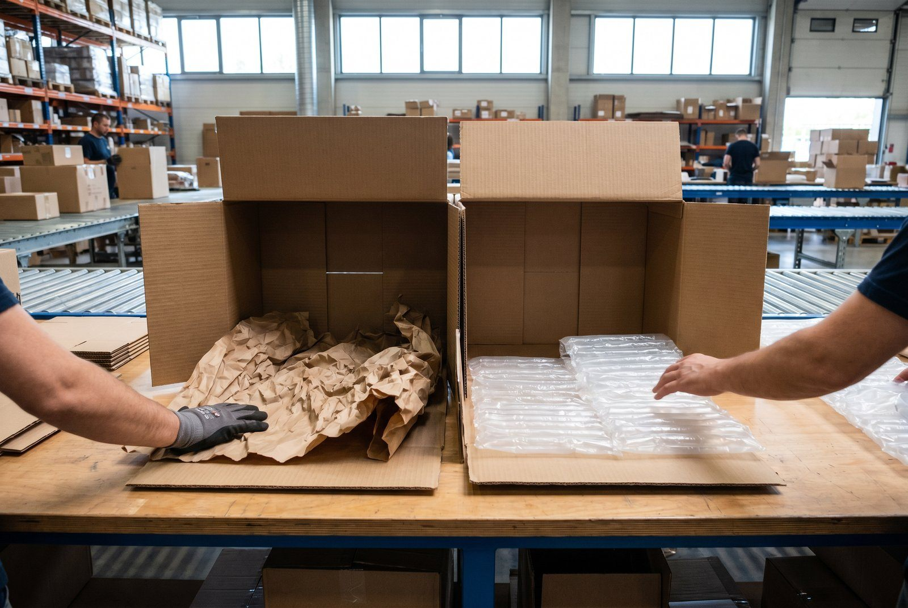

Du er skiftet fra plastbobler til papirkrøl. Du fortæller dine kunder at du er bæredygtig. Men er papir faktisk bedre for klimaet? Svaret er mere nuanceret end din emballage-leverandør fortæller dig.
Kort svar
👉 Vil du se det i praksis? Kontakt SmartPack
Papir-fyldmateriale er ikke altid bedre end plast når du regner CO2 per kg beskyttelse. Men plastikbobler er et markedsføringsproblem uanset CO2-beregningen. Det praktiske svar: skumindlæg og papirkrøl er de bedste alternativer for de fleste webshops - af årsager der er både økonomiske og æstetiske.Myterne der skal aflivedes
Myte 1: Papir er altid CO2-bedre end plast Forkert. Papirproduktion er energiintensiv. 1 kg papirkrøl: ca. 1,0-1,4 kg CO2e. 1 kg plastbobler: ca. 2,5-3,5 kg CO2e. Men plastbobler vejer meget lidt - du bruger måske 10g plastik mod 80g papir for at beskytte samme vare. Per beskyttelsesunit kan de være tæt på. Myte 2: Genbrugspapir er bæredygtigt uanset kilde Kun hvis det faktisk er genanvendt. Tjek leverandørens dokumentation (FSC-mærke eller genanvendt-certifikat). Mange „øko”-emballager er virgin papir med brønt design. Myte 3: Biologisk nedbrydelig plast løser problemet Bio-plast nedbrydes kun i industrielle komposteringsanlæg ved 60°C+. I husholdningens affaldssortering: ender i ræt affald eller forværrer genanvendelsesstrømmen.Fyldmateriale-sammenligning
| Type | CO2 per kg | Beskyttelses-effekt | Kundeoplevelse | Pris/m³ |
| Plastikbobler (PE) | 2,5-3,5 kg | Høj | Negativ (misliker plast) | 120-180 kr. |
| Papirkrøl | 1,0-1,4 kg | Middel | Positiv | 90-150 kr. |
| Skumindlæg (EPE) | 3,5-5,0 kg | Meget høj | Neutral-positiv | 200-400 kr. |
| Højstivhed papirindlæg | 1,2-1,8 kg | Høj | Positiv (premium) | 150-250 kr. |
| Genanvendt papirkrøl | 0,6-0,9 kg | Middel | Meget positiv | 110-170 kr. |
| Luftpuder (genanvendt) | 1,8-2,5 kg | Høj | Neutral | 80-130 kr. |